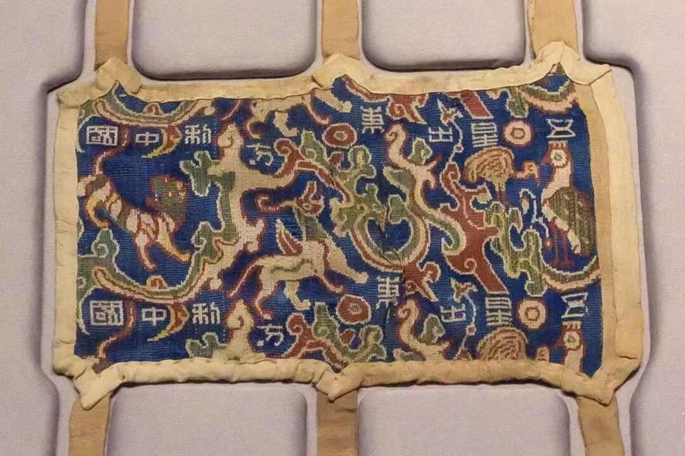
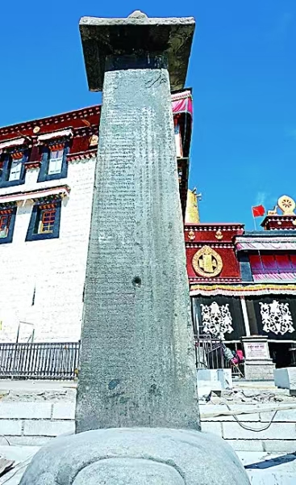
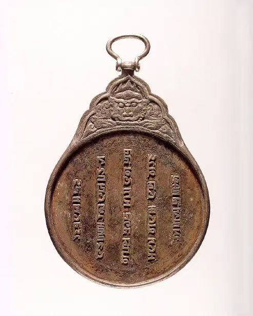
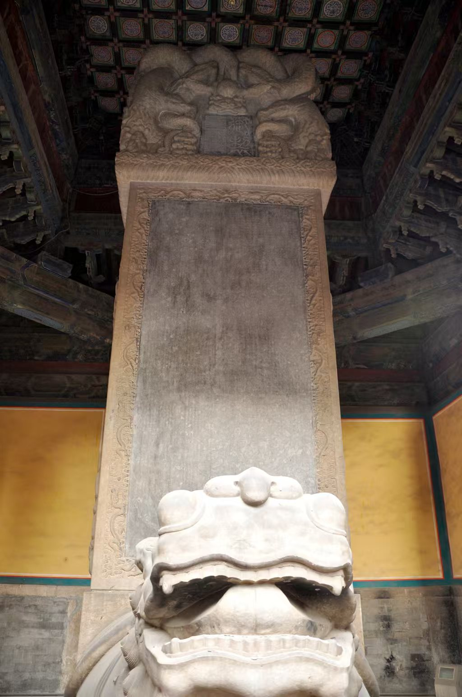

汉 · 丝路初通
一件中原宫廷织锦出现在西域精绝贵族的墓葬中，证明大一统打通了中原与边疆的联系。

基本信息
- 是什么：汉代五重平纹经锦护臂，射箭时保护手臂的用具。长18.5厘米，宽12.5厘米。
- 哪个时期：东汉。1995年出土于新疆和田地区民丰县尼雅遗址（古精绝国），首批禁止出国（境）展览文物、国家一级文物。
- 用途：射箭护臂。同墓出土弓、箭、箭箙等物，可确认其实际功能。
- 铭文含义：“五星”指金、木、水、火、土五大行星；“中国”当时指黄河中下游的中原地区。整句是汉代星占吉语，意为五星汇聚东方天穹，于中原军国大事有利。
五大价值分析
历史价值
实证汉代对西域的有效管辖。织锦为中原宫廷织造，赏赐给精绝贵族，是丝绸之路沿线政治隶属与物资流动的直接物证。也是新疆发现年代最早的带有“中国”字样的文物。
文化价值
融合阴阳五行、天文星占与祥瑞神兽文化，把天文、哲学、艺术浓缩于方寸之间；代表汉代蜀锦最高工艺水平，是“瑞应德化”思想的艺术化表达。
生态价值
尼雅地处塔克拉玛干沙漠腹地，不利于植桑养蚕。蜀锦原产四川，经丝绸之路长途转运抵达西域，是汉代长距离贸易网络与跨生态区域物资调配能力的实物证据。
学术价值
为研究汉代纺织技术、丝绸之路贸易史、西域城邦与中原的政治经济联系提供一手实物；可与《史记·天官书》的星占记载互证。
选品理由
它是整个展览的起点。一件中原宫廷织物出现在西域精绝贵族的墓葬中，以最直观的方式证明：大一统不只是疆域的划线，更是文化理念、物资技术与身份认同的跨区域流动。
与中华民族共同体的联系
汉朝大一统之下，中原汉族与西域各民族交往交流交融。这件文物证明，早在两千年前，边疆民众和中原已经共享一套文化观念与符号体系。各族人民共同开拓疆域、共同发展商贸文化，为多元一体格局奠定了最初的实物根基。
唐 · 甥舅和盟
大一统不只有武力统一，还有和平共处、文化互认，各民族可以在同一个中华文明框架下共生。

基本信息
- 是什么：又称“长庆会盟碑”“甥舅和盟碑”，唐长庆三年（823年）吐蕃赞普为纪念长庆元年至二年唐蕃会盟而立于拉萨大昭寺门前。
- 哪个时期：唐（公元823年）。
- 用途：纪功与盟誓碑刻。碑阳汉藏对照镌刻盟文，碑阴藏文记述唐蕃友好历史，碑侧刻双方参与会盟官员名单。
- 盟文核心：“舅甥二主，商议社稷如一，结立大和盟约，永无沦替”，并申明“彼此不为寇敌，不举兵革”。
五大价值分析
历史价值
汉藏民族友好交往的实物见证。记录唐蕃结束长期战争、达成和平盟约，此后双方纷争基本停止，边境趋于安定；同时实证文成公主、金城公主入藏和亲所奠定的甥舅姻亲关系。
文化价值
碑上汉藏双语铭文并存，是研究古藏文、汉藏语言接触的珍贵语料；碑文文笔庄重，是唐代重要盟誓文献；千余年来矗立大昭寺前，已成为汉藏“和同为一家”的文化记忆载体。
生态价值
唐蕃古道穿越青藏高原，茶马互市、使节往还、和亲队伍在这条生态条件严酷的通道上持续流动。碑刻所凝固的和平秩序，是高原与中原之间在物资互补、生态依存基础上形成的长期交换关系在政治层面的确认。
学术价值
法国藏学家戴密微盛誉其为“目前人们所知道的有关亚洲最重要的碑铭资料”；汉藏双语铭文可与中原史书互相对照，是研究唐代吐蕃历史、唐蕃边界与古代民族关系的一手原始史料。
选品理由
它是整个展览的转折点。如果说汉代织锦证明的是“大一统打通了联系”，唐蕃会盟碑证明的则是“大一统可以以和平盟约的方式维系”。它把“统一”从军事征服的单一叙事中解放出来，展示了文化互认与政治妥协在共同体建构中的关键作用。
与中华民族共同体的联系
隋唐大一统推动各民族深度交融。汉藏两族订立盟约，“和同为一家”，体现的是不同民族对中华文明框架的共同认同。各民族在交往中加深情感联结，汇聚进中华民族共同体的长河。
元 · 驿路一体
大一统国家能够把草原民族、高原民族、中原民众纳入同一套国家制度之中。

基本信息
- 是什么：元代官方符牌，铁铅合金质地，牌面嵌银质八思巴文。铭文意为“大汗圣旨所到之处，众民必须敬畏之”。
- 哪个时期：元代。八思巴文是忽必烈命国师八思巴以藏文字母为基础创制的“蒙古新字”，可拼写蒙、汉、藏、梵等多种语言。
- 用途：元代驿传制度中的通行凭证。使者持此牌可在全国驿站快速通行，传递军政急务；因元朝疆域辽阔，此类符牌甚至可通行蒙古四大汗国，被学者称为“国际通行证”。
五大价值分析
历史价值
元代驿站与行政制度的实物证据。印证了元朝依靠驿站系统在庞大疆域内传递政令军情、保障国家治理的能力；此牌直接见证了元代中央政令在西藏的传达与执行，为中央政府对西藏行使直接管辖权留下了珍贵实物证据。
文化价值
八思巴文是中国古代少有的以统一文字拼写多民族语言的系统性尝试，体现了元朝试图以一套文字体系覆盖多语言帝国的治理理念；铁胎嵌银、浮雕虎纹的工艺，继承了先秦以来的符信文化传统。
生态价值
虎符圆牌关联的是一张覆盖欧亚的驿站交通网络。这套制度得以运转的前提，是对不同生态区域——草原、绿洲、高原、农耕区——之间交通线的系统整合。符牌本身虽小，却是跨生态治理能力的一个制度节点。
学术价值
为研究元代政治制度、军事符牌等级、驿站运行机制提供了标准器；八思巴文铭文同时也是研究元代多民族语言文字使用状况的直接材料。
选品理由
它是展览中空间跨度最大的一件。汉唐两件文物处理的是中原与西域、中原与高原的关系，这枚符牌则把“共同体”的制度半径扩展到了欧亚尺度的驿站网络之中。它证明：大一统国家不只是“把不同民族放在同一片疆域里”，更是“把不同民族编入同一套可运作的制度之中”。
与中华民族共同体的联系
元朝把广袤边疆纳入统一国家版图，不同民族共同在统一政权下生产生活。各族人民共同参与国家交通、行政体系的建设与运行，进一步加深了中华民族多元一体格局，是“百川汇流入大一统王朝”的制度化体现。
清 · 疆域底定
维护国家统一，是各个民族共同的责任。无论哪个民族，都认同大一统国家，共同守护祖国疆域。

基本信息
- 是什么：乾隆皇帝为纪念平定准噶尔之乱胜利而亲撰碑文的纪功碑。碑文以满、汉、蒙、藏四种文字刻写。
- 哪个时期：清乾隆二十年（1755年）。
- 用途：纪功与政治宣示。原碑立于北京国子监（太学），意在向天下读书人宣告西北一统的功业，把边疆事务纳入儒学教化与天下秩序的叙事之中。
五大价值分析
历史价值
记录清朝历经康雍乾三代最终平定准噶尔分裂势力、将西域稳固纳入版图的重大史实；乾隆亲撰碑文可与《清实录》《平定准噶尔方略》互证，是研究清代西北边疆史与民族治理的原始文献。
文化价值
满、汉、蒙、藏四体文字同刻一碑，是清代“多民族文字并用”治理理念的物质化表达；碑文反驳“西域荒远不必治理”的旧观点，塑造了清代全新的“中华”疆域观。
生态价值
平定准噶尔之后，清朝在西北边疆建立起相对稳定的治理秩序，这为天山南北绿洲—草原交错带的农牧业生产、商路通行与人口安顿提供了政治前提。碑体本身直面风沙侵蚀，其保护史也是一部边疆文物与自然环境相互作用的记录。
学术价值
碑文满汉合璧（格登碑另存四体文字），是研究清代多民族文字行政实践、御制碑刻制度、边疆纪功礼仪的珍贵样本；御笔楷书与螭首龟趺形制，也是清代碑刻书法与礼制艺术的代表。
选品理由
它是整个展览的收束之作。前三件文物分别证明了“联系”“盟约”“制度”，这块碑则把它们统一到一个明确的结论上：维护国家统一，是各个民族共同的责任。四体文字同刻一石，本身就是“共同书写中国历史”的微缩景观。
与中华民族共同体的联系
清代大一统把众多民族整合在统一疆域之内。满、汉、蒙、藏文字同刻一碑，代表各民族共同书写中国历史、共同守护国家统一；中华民族共同体的凝聚力在这一制度与符号的双重整合中进一步强化。